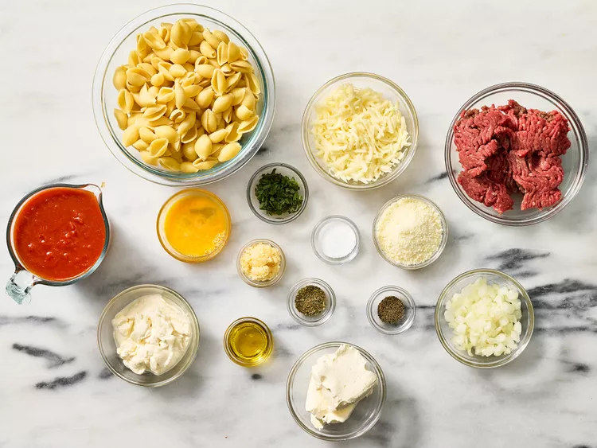
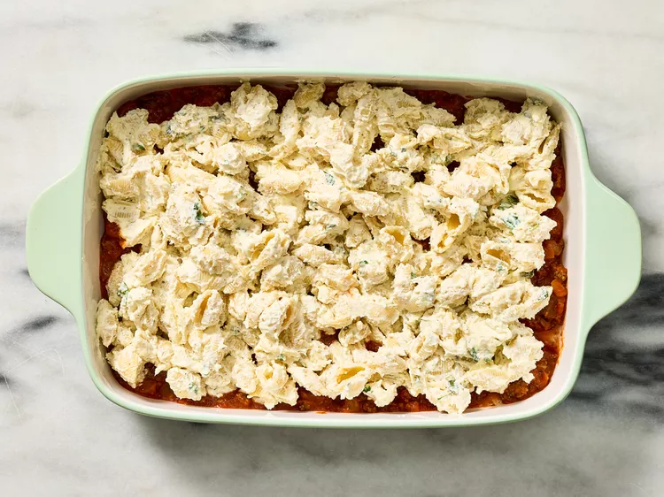

Tender pasta shells with ricotta, cream cheese, Parmesan, marinara, and ground beef, topped with bubbling mozzarella.
- 12 oz medium pasta shells
- 1 lb ground sirloin
- 1 1/4 tsp kosher salt
- 1 tsp Italian seasoning
- 1/2 tsp black pepper
- 1 yellow onion, chopped
- 1.5 tbsp minced garlic
- 1 jar marinara sauce
- 1 cup ricotta cheese
- 1 (8oz) package cream cheese
- 1/2 cup Parmesan cheese
- 1/4 cup fresh basil
- 1 large egg
- 1 cup mozzarella cheese
- Preheat oven to 350°F. Grease a baking dish.

- Cook pasta shells in salted boiling water.

- In a skillet, heat oil, cook sirloin, onion, garlic, then add marinara sauce.

- Mix ricotta, cream cheese, Parmesan, basil, egg, and seasoning. 
- Layer pasta, meat sauce, ricotta mix, repeat, then top with mozzarella.
- Bake uncovered for 20-25 minutes until golden and bubbly.

Storage: Store leftovers in an airtight container in the refrigerator for up to 4 days.
Reheating: Oven at 350°F for 10-15 minutes or microwave for 1-2 minutes.